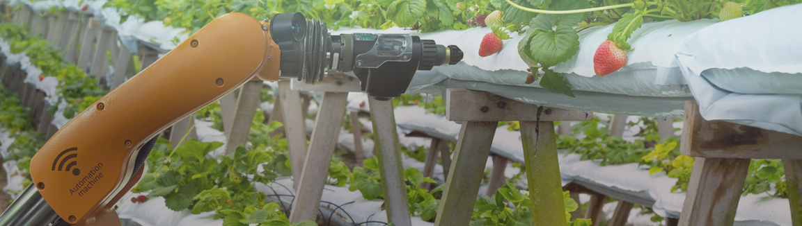

About the project
MQTTerra is an IoT solution for plant/reservoir irrigation and monitoring developed using ESP32 development kits.
It tracks the temperature, soil moisture, air humidity and water distance of the irrigation apparatus via topics created using a CloudMQTT 3.1.1 Broker, to whom both endpoints are connected (web dashboard and ESP32 boards).
App-side, Eclipse Paho's JavaScript client was implemented so the user can interact fully regardless of platform (PC, mobile, tablet...).
Authors: André Schlichting (mainly backend), Kauê Cano (mainly frontend).
This project is the final delivery of an IoT-focused program offered at UFSC (Federal University of Santa Catarina - Brazil) called EEL7515 - Advanced Topics on Signal Processing II / Telecommunications IV, mainly administered by PhD Richard Demo Souza. Aiming to know more about the fields of electronic sensor monitoring, data storage and IoT, we proposed to develop a monitoring system of different areas of a garden, compiling info such as the level of water in a reservoir and the quality of potted soil of plants into an SQL database, as well as MQTT topic that also ables the ESP32 boards to receive remote control instructions. Users can monitor the information through a web page in the form of a dashboard with a simple, slick design..
As mentioned, MQTTerra was developed (among many other reasons such as technological benchmark, curiosity, interest in IoT and so on) to deliver on the final project of EEL7515. With that in mind, requests, issues and recommendations are welcome, but we're not actively developing MQTTerra from 2019 Q3 on. For major changes, please open an issue first to discuss what you would like to change on our Github.
For images of the actual hadware setup used throught time/ applications, visit the Photos section.